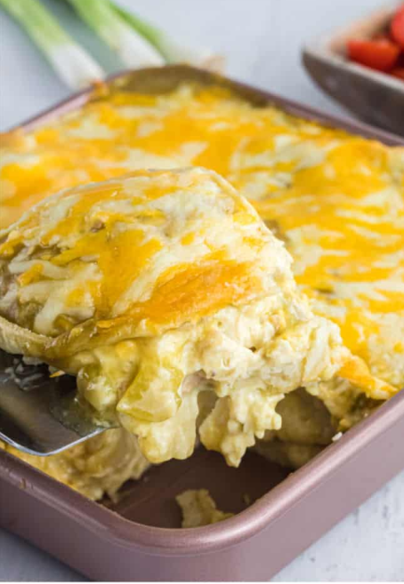

Green Chili Enchilada Casserole
Ingredients
- Cooked chicken breasts
- Sour Cream
- Canned diced green chilis
- Green chili enchilada sauce
- Corn tortillas
- Cream of chicken soup
- Salt and pepper
HOW TO MAKE CHICKEN ENCHILADAS
- Start by preheating your oven to 350 degrees F.
- While the oven is heating up, mix together your filling. Add the cream of chicken soup, sour cream, some of the enchilada sauce, and a little salt and pepper to a mixing bowl. Then, add the diced or shredded chicken and green chilis and mix it all up.
- Pour a little enchilada sauce in the bottom of your baking dish and spread it. You want the entire surface covered in sauce. After that, cover the saucy bottom with a few tortillas. I usually cut or tear one to fill in the gaps.
- Spread one-third of the chicken mixture over the tortillas. Then pour some more enchilada sauce over the filling and cover with more tortillas. Repeat this process until you have three layers of chicken, sauce, and tortillas. Be sure to add a layer of cheese after your second layer of chicken and enchilada sauce. Like you’re building a lasagna!
- Top the third layer of filling with more tortillas and the remaining enchilada sauce. You want to make sure to cover all the tortillas with sauce to keep them from drying out in the oven.
- Sprinkle the remaining cheese all over the top of the casserole. Then bake it for about 30 minutes, or until the cheese is melted and the casserole is bubbling.
- Take the casserole out of the oven, and let it rest for a few minutes after cooking. This will get you the cleanest slices when you go to serve it up. Add toppings as you wish and enjoy!